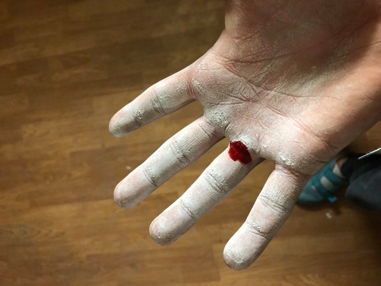

Bevezetés
2018 őszén ismerkedtem meg ezzel a sortággal és értettem meg igazán, hogy mennyire nem olyan egyszerű mint amennyire elsőnek tűnik. Nem csupán fel kell kapaszkodni a falra és menni, mint ahogy először én gondoltam. A falmászásnak két nagy típusa van. A köteles és boulder mászás, azaz a biztosított és biztosítatlan. Mindkettőt lehet a szabadban, illetve beltérben, mászótermekben űzni. Boulder mászás maximum olyan 4-5 méterig történik, mivel ilyenkor szabadon mászik az ember és ekkor egy körülbelül 30 cm-es szivacs tompítja az eséseinket. A 15-20 méteres épített falakat és a 20-30 (vagy több) méteres sziklafalakat, beülővel és kötéllel lehet mászni. Ezeknek a kezelését meg kell tanulni, illetve azt is hogyan kell valakit biztosítani, ami nagy felelőséggel jár. A mászóterem, a BXSC, Százhalombattán, ahova rendszeresen járok edzeni, egy boulder terem így többnyire csak boulderezni szoktam. Sziklafalon még nem voltam, de egyszer mindenképp szeretnék eljutni.

Maga a mászás
Eleinte nagyon szokatlan volt ez a mozgásforma, amit nehéznek is éreztem. Egyrészről meg kellett érteni, hogy nem úgy kell a falra mászni mint ahogy azt a játszótéren a mászókára tesszük. Sokszor a fura és természetellenes mozdulatok a legtermészetesebb miközben mászik az ember. Persze fizikálisan is bele kell rázódni ebbe a sportba. Jó erőnlétet és állóképességet igényel a falmászás, de leginkább meg kell szokni. Egy két hónap kitartó, rendszeres mászással nagyon sokat tudunk fejlődni és erősödni. Megerősödik az embernek a szorítása, az ujjai és nem az van, hogy 5 perc mászás után a kulacsot sem tudja megemelni, mert nem tud szorítani a kezével. Az ember megszokja a mászócipőt ami mindig szorított a legelején, de aztán kényelmessé válik, megszokja azt hogy mindene tele van krétaporral (másnéven ziával), amit a kezünkre kell tenni, hogy minél jobban tapadjon. Az első pár honapban ami számomra a legnehezebb volt, az viszont ez:

A hólyagok. Illetve amikor kiszakadnak. Szerencsére ezek nem olyan komolyak mint ahogy kinéznek és inkább zavaróak mint fájnak. Pár nap alatt begyógyulnak, de van hogy egy este alatt.
Viszont az első pár hét az biztosan hasonlóan (nem mindig ekkora sebekkel) telik, míg fel nem keményedik a bőr a tenyeren. Ehhez viszont mászni kell. Ördögi kör.
Viszont aki
ezeken túlteszi magát és együtt tud élni ezekkel a tényzőkkel, az leírhatatlan élményt él át minden egyes alkalommal amikor egy új utat megmászik a falon. Nagy szabadságérzetet és adrenalin löketet ad.
Olyan érzés mintha túllépné az ember a saját képességeit, határait. A legjobb csapatban mászni, igazán osszekovácsoló hatása van, mint azthiszem minden sportnak. Aki teheti, egszer mindenképp próbálja ki!
Nálam nagyon bevált.
Köszönöm, hogy elolvastad!